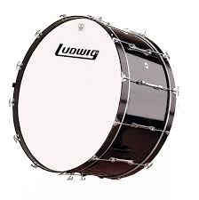
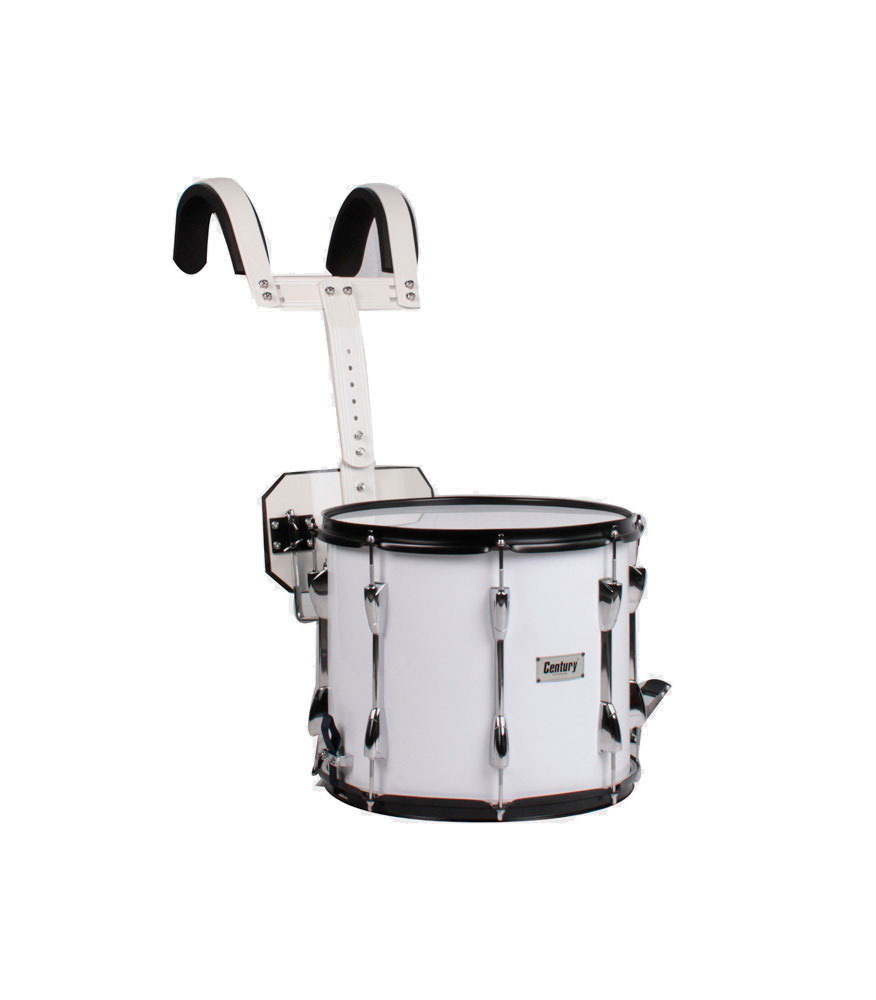
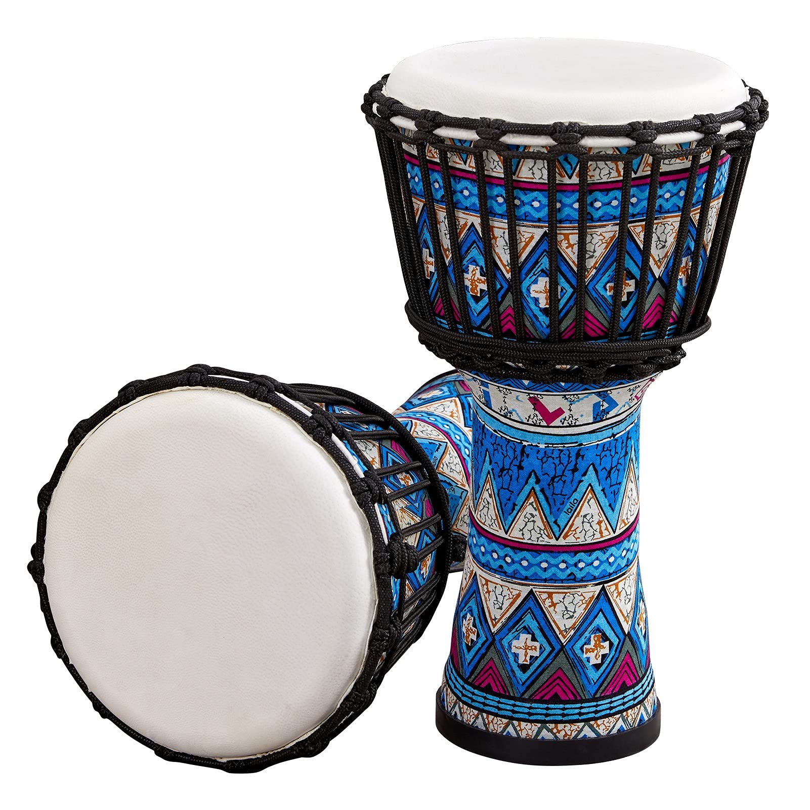
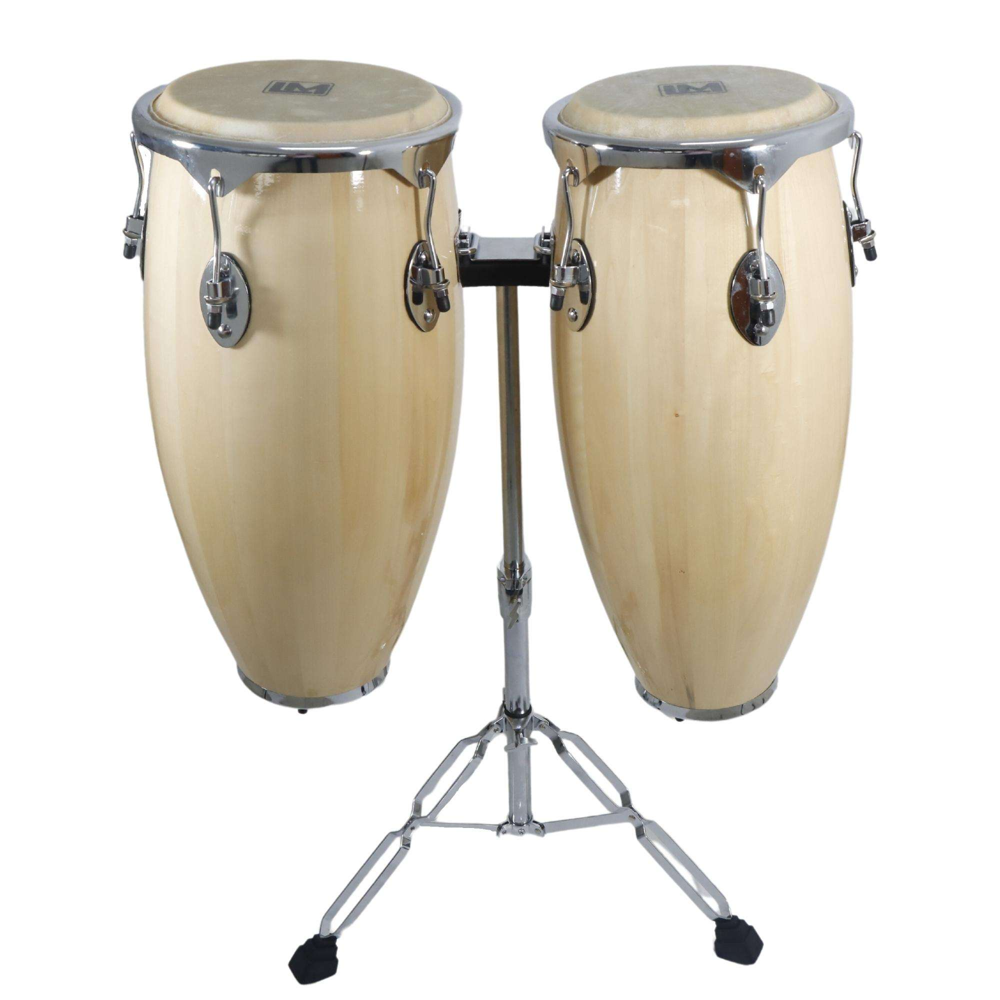
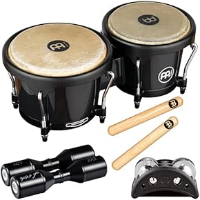
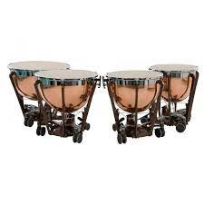

Tambor Redoblante-Produce un sonido agudo y seco,usado en bandas.$1,000 MX

Bombo-Tambor grande con sonido grave,marca el pulso en la batería.$1,989 MX

Tom-Sonido profundo y resonante,Esencial de la batería acústica.$1,989 MX

Djembe-Tambor africano,se toca con las manos,tiene gran expresividad.$2,000 MX

Congas-Tambores altos y delgados de origen afrocaribeño.$2,050 MX

Bongós-Pareja de tambores pequeños,muy usados en música latina.$2,090 MX

Timbal-Tambor de orquesta con afinación ajustable.$2,100 MX